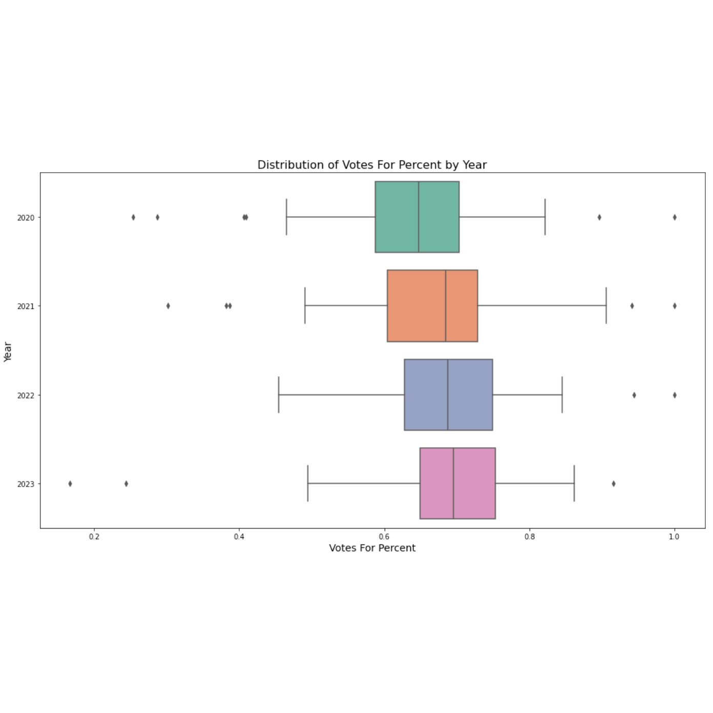

Recent Projects
- Phonetic's NetworkX Project – Python + NLP tool that quantifies rhyme density, phonetic overlap, multisyllabic structures, and flow segments. Web app lets users paste lyrics, process, and view interactive visual breakdowns; long‑term vision includes premium insights & TouchDesigner visualizations.
- Lyrics Upload & Processing Web App – Flask backend saves user‑named lyric files, queues analysis jobs, returns HTML results with progress/loading UI.
- Basketball Data Scraper & Dashboard – Automated Basketball Reference scraping (team rosters by season), standardized historical team abbreviations (e.g., NOP ↔ NOK/NOH), and an interactive dashboard for exploring CSV outputs.
